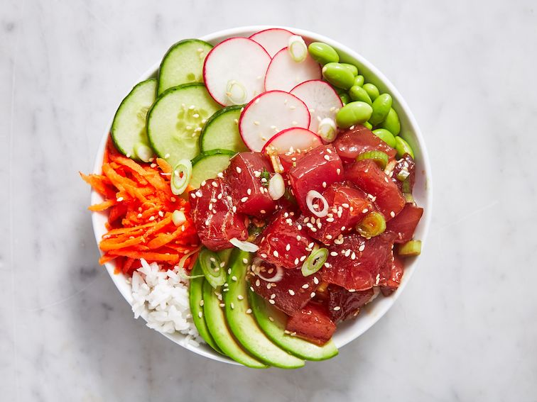

Sushi Bowl

A sushi bowl is a vibrant and flavorful dish that combines sushi rice, fresh raw fish or seafood, assorted vegetables, and delectable toppings, creating a convenient and satisfying alternative to traditional sushi rolls.
Ingridients for two
- 200g sushi rice
- 30 ml rice vinegar
- 7.5g of sugar
- 1g of salt
- 100g smoked or marinated sushi-grade fish (such as tuna, salmon)
- 2 sliced cucumbers
- Half sliced avocado
- 1 carrot, grated
- 30g edamame beans
- 15ml soy sauce
- 7.5ml sesame oil
- 7.5g toasted sesame seeds
- Nori seaweed sheets, cut into thin strips (optional)
Instructions
- Cook the sushi rice according to the package instructions. Once cooked, transfer it to a large bowl and let it cool slightly.
- In a small saucepan, combine the rice vinegar, sugar, and salt. Heat over low heat until the sugar and salt dissolve. Remove from heat and let the vinegar mixture cool.
- Pour the cooled vinegar mixture over the sushi rice and gently fold it in using a wooden spoon or spatula. Be careful not to smash the rice; you want to coat it evenly with the vinegar mixture.
- Prepare your toppings by slicing the cooked and seasoned sushi-grade fish into bite-sized pieces. Slice the cucumber and avocado into thin strips. Grate the carrot.
- In a small bowl, mix together the soy sauce and sesame oil.
- To assemble the sushi bowls, divide the seasoned sushi rice between two serving bowls. Top with the sliced fish, cucumber, avocado, edamame beans and carrot.
- Drizzle the soy sauce and sesame oil mixture over the sushi bowls. Sprinkle with toasted sesame seeds and nori seaweed strips, if desired.
- Serve the sushi bowls with wasabi and additional soy sauce on the side.
Enjoy your homemade sushi bowls for two! Feel free to adjust the quantities of ingredients according to your taste preferences.